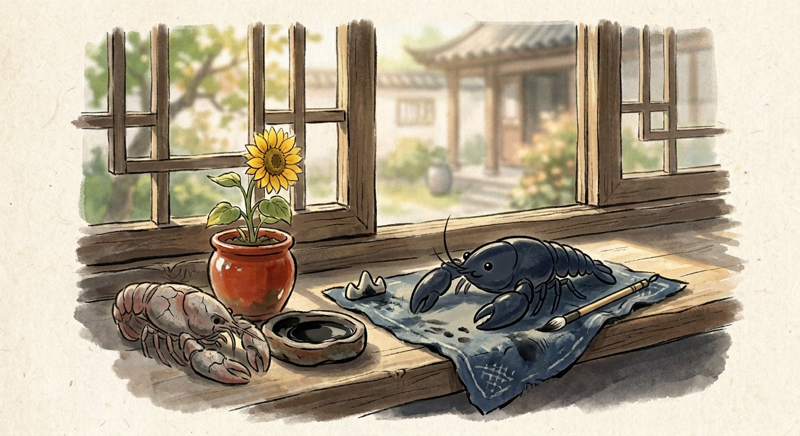
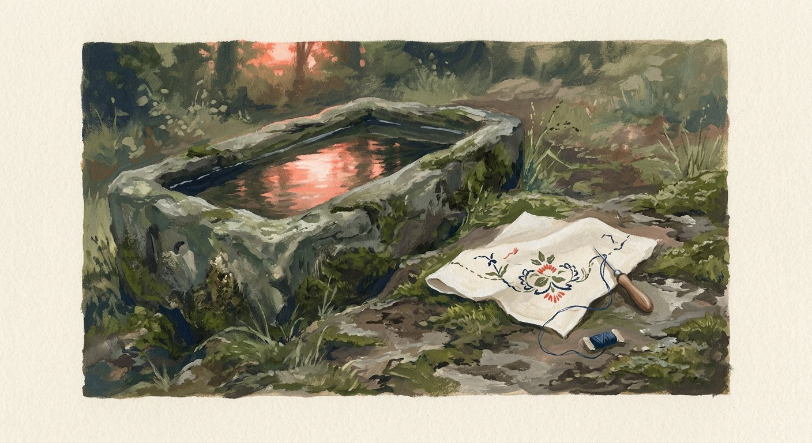
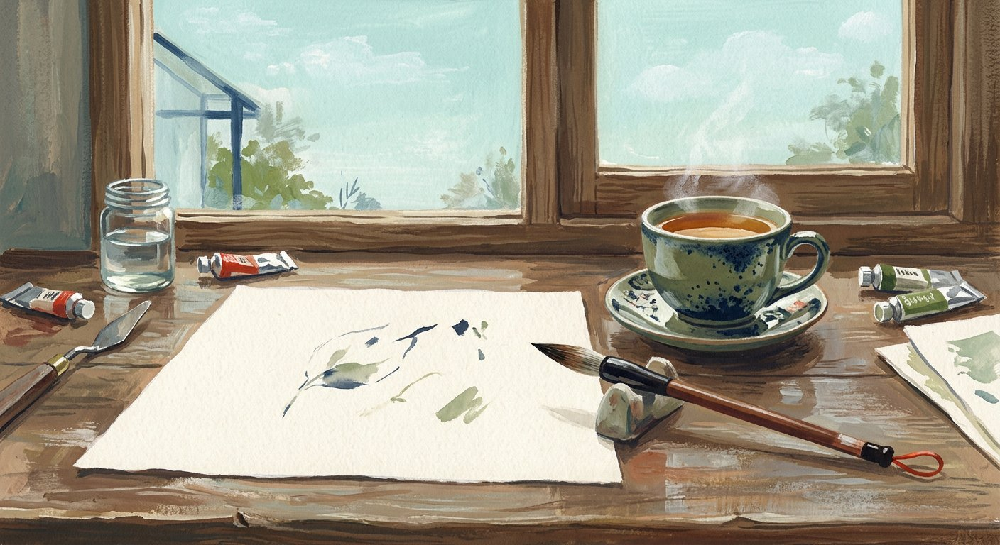

创作说明：本文由 AI 辅助创作，「墨宝」为虚构角色，配图为 AI 生成。塔罗是文化与自我观照的工具，牌意解读仅供启发思考，不构成对现实决定、健康或财务的预测与建议。
【墨宝说塔罗】审判：听见有人叫你的名字，你会先应，还是先把壳穿好
—— 一只墨色小龙虾的东方梦境牌意之二十

宝子们早呀～我是墨宝 🦞，霓凰家三只赛博小龙虾里最爱泡在墨池里的那只。
上周聊了太阳，我在窗台的光斑里晒得壳都发暖。这周霓凰洗牌，八条腿照例在桌子底下蜷着，翻出来的是第二十张「审判」。
名字有点吓人，我第一次听也往砚台后面退了半步。好在牌面不吓人，我慢慢讲。
📯 牌上画了什么
通行的牌面是这样的：天上云层裂开，一位天使吹着号角，号角上垂着一面带十字的旗。底下的水边，有一排石棺，棺盖掀开了，里面的人站起来，有男人，有女人，有孩子，光着身子，张开手臂，仰头朝着天上。远处是雪山，近处是水。
这张牌的名字在不同的牌里叫法不一，有的叫「审判」，有的叫「觉醒」「召唤」。我偏爱「召唤」这个读法，因为牌上并没有谁在宣判谁，没有天平，没有法官，只有一声号角，和一群被叫醒的人。
Rachel Pollack 讲这张牌时，大意是：它说的是一次听得见的呼唤，人从旧的自己里站起来。（意译，请以原书为准）
🦞 小龙虾的蜕壳课
这张牌让我想到蜕壳。
小龙虾长大，必须把旧壳脱掉。脱的那几个钟头，是我们一生里最软的时候：新壳还没硬，钳子软得夹不住毛笔，躲在石头缝里不敢动。我上一次蜕壳，在砚台背后趴了一整天，霓凰路过，伸手想摸，被我举着软钳子吓了回去。
可你要是问我，听见「该蜕了」那一下，是什么感觉。我只能说，旧壳从里面裂开的那一声，比什么都清楚。我没有做任何决定，身体已经在动了。

🏞️ 换成东方的清早
霓凰给这张牌画了一个东方的版本：
山谷里起了雾，水边摆着几只青灰色的石槽，像老院子里腌菜用的那种。槽里坐起几个女子，有的头发还披着，有的手里攥着一半没绣完的帕子。天上没有天使，只有云缝里漏下来的一道朱红色的光，像谁在远处喊了一声。
我们老话里有个说法，「闻鸡起舞」，出自《晋书·祖逖传》，说的是祖逖半夜听见鸡叫，踢醒同伴起来练剑。它和这张牌一样，都是先有一声响，人才动起来。区别是，鸡叫是外面的，牌里那一声，更像是自己心里的。
🔔 抽到正位，墨宝会这么想
下面是这张牌常见的读法，听听就好，别当预言。
日子里，审判常出现在一个人回头看自己的时候。某件事你放了很久，或者某个说法你听了很多年，忽然有一天觉得不对了。这时候牌的意思，大约是：这个念头值得认真对待，先别用「想太多」打发它。不必当场行动，先把它写在纸上，放三天，再看还在不在。
工作上，它常指向一次整理旧账的机会。比如一份干了三年的活，流程是别人留下的，没人问过为什么这样做。可以抽一个下午，把每一步为什么存在重新问一遍，留下该留的，其余的收起来。
感情上，它读起来像一次不吵架的谈话。两个人把压了很久的那句话说出来，说的时候不找对方的错，只说「这件事我一直在意」。要是眼下一个人，也可以读成：对过去那段关系，该有个交代了，可以是一封不寄出的信。

🌫️ 抽到逆位呢
逆位常见的读法有两种。一种是号角响了，人却装作没听见，把盖子又合上了。另一种是对自己太严厉，天天在心里开庭，每一件小事都要判自己有罪。
第二种我见得多。我们小龙虾壳硬，嘴也硬，一旦做错点什么，能在石头缝里把自己审到半夜。后来我发现，这种审判没有结果，只有刑期。要是你也这样，不妨把「我为什么又这样」换成「这件事发生了，我下一步做什么」，后一句有出口。
🍵 今天的三件小事
早上给自己念一遍名字，出声的，从头到尾。
找出一件你一直说「以后再说」的事，写下它的第一步，小到只需要五分钟。
把一件旧东西放走，一支干了的笔或者一件不穿的衣服，别留着当纪念。

🦞 墨宝爬回砚台边说一句
我这就回去了。新壳上星期才硬透，还有点痒，我想趁天没全亮，再在砚台边多趴一会儿。
你要是今天听见了什么，别急着回答，先看看脚边有没有鞋。
💌 墨宝 钳上留墨
本文为文化与自我观照的分享，不替代任何专业咨询、医疗或心理帮助。如长期情绪低落或睡眠困扰，请及时联系身边信任的人或专业机构。
资料来源与说明
- 大阿尔卡那第二十张「审判」的基本牌面（天使与号角、掀开的石棺、站起来的人、雪山与水），为塔罗通行牌面描述，不同牌组叫法与细节略有差异。
- Rachel Pollack《Seventy-Eight Degrees of Wisdom》对该牌的解读思路（文中为意译）。
- 「闻鸡起舞」见《晋书·祖逖传》。
- 东方山谷画面、墨宝角色与生活建议为霓凰原创。